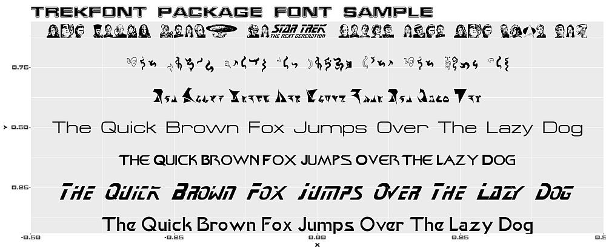

This package contains true type and open type Star Trek fonts.

Installation
Install trekfont from CRAN with
install.packages("trekfont")Install the development version from GitHub with
# install.packages("remotes")
remotes::install_github("leonawicz/trekfont")Examples
trekfonts contains one dataset, trekfonts, which is just a character vector of all 107 available font files.
Font files can be installed using the sysfonts package.
Here are some examples, leveraging sysfonts and showtext.
# install.packages("trekfont")
library(showtext)
font <- c("Khan", "StarNext", "FederationDS9Title", "Federation", "Klingon", "ModernVulcan", "TNGcast", "FederationStarfleet")
path <- system.file(paste0("fonts/", font, ".ttf"), package = "trekfont")
for(i in seq_along(font)) font_add(font[i], path[i])
font_families()
showtext_auto()Use base graphics…
y <- seq(0.1, 0.9, length.out = 7)
txt <- "The Quick Brown Fox Jumps Over The Lazy Dog"
plot(0, 0, type = "n", ylim = c(0, 1), main = "trekfont package font sample", family = font[8])
for(i in 1:7) text(0, y[i], txt, family = font[i])or ggplot2…
library(ggplot2)
g <- ggplot() + theme_gray(base_family = font[8]) + ggtitle("trekfont package font sample")
for(i in 1:7) g <- g + annotate("text", 0, y[i], label = txt, family = font[i], size = 12.5)
g
Did you ever think you would be annotating your plots in Vulcan and Klingon?
The rtrek package does not import trekfont, but it does provide a convenient wrapper function, rtrek::st_font, for previewing the various fonts if trekfont is installed. This is the example plot shown at the top.
Packages in the trekverse

rtrek: The core Star Trek package
Datasets related to Star Trek, API wrappers to external data sources, and more.

lcars: LCARS aesthetic for Shiny
Create Shiny apps based on the Library Computer Access/Retrieval System (LCARS).

trekcolors: A color palette package
Predefined and customizable Star Trek themed color palettes and related functions.

trekfont: A fonts package
True (Trek) type fonts to style your Star Trek themed graphics text.
Citation
Matthew Leonawicz (2024). trekfont: Star Trek Fonts Collection. R package version 0.9.6. https://CRAN.R-project.org/package=trekfont
Contribute
Contributions are welcome. Contribute through GitHub via pull request. Please create an issue first if it is regarding any substantive feature add or change.
Please note that the trekfont project is released with a Contributor Code of Conduct. By contributing to this project, you agree to abide by its terms.